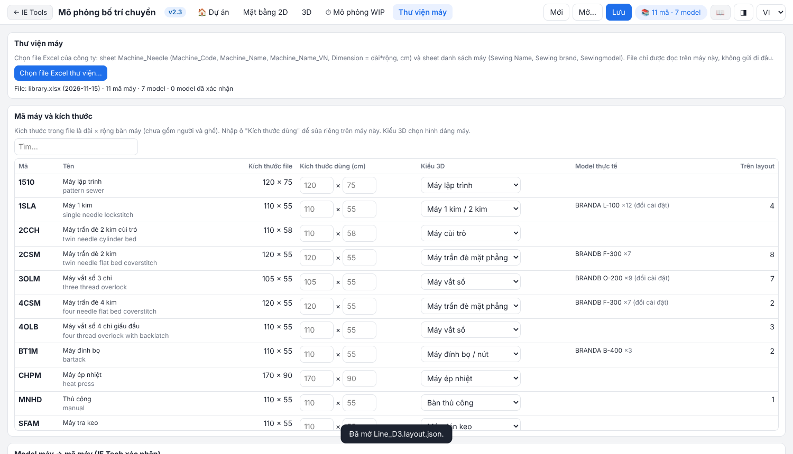
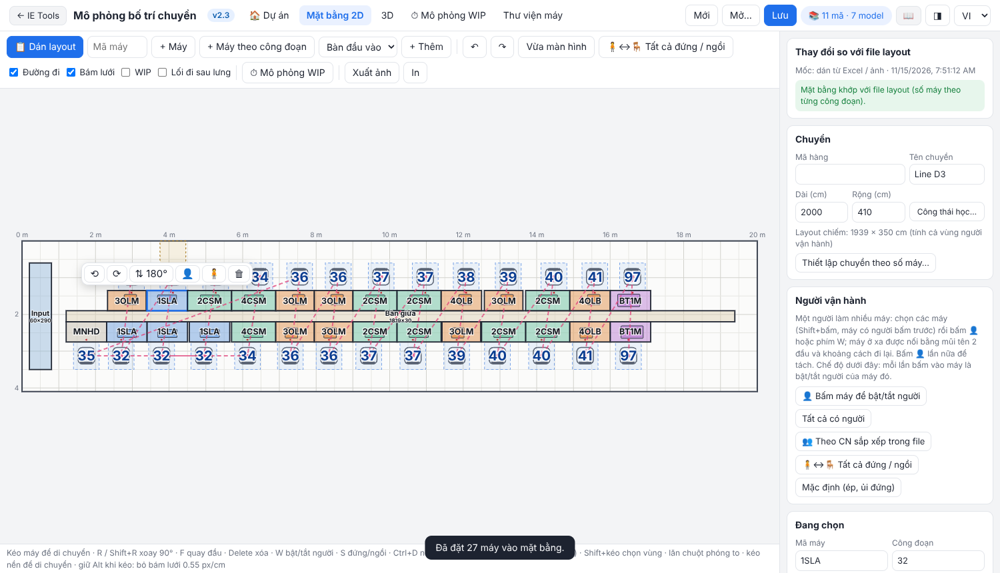
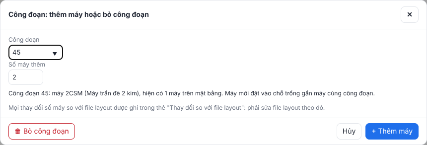
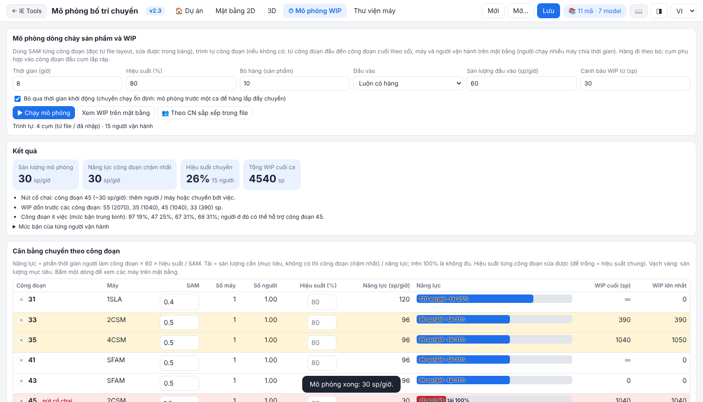

Layout Sim
Line layout simulator to scale: bring a layout from the Excel file onto the plan, arrange machines, check operator zones, measure the flow distance of the work, simulate WIP and view in 3D. Runs in Chrome or Edge and sends no data anywhere.
1. Introduction
| Task | Where |
|---|---|
| Bring a style's layout onto the line (layout Excel file, pasted Excel range or pasted picture) | Tab Mặt bằng 2D (2D plan), button 📋 Dán layout |
| Arrange and turn machines, operators, standing/sitting, collision and aisle checks | Tabs Mặt bằng 2D and 3D |
| Add/remove machines by operation, track the changes to make in the layout file | Button + Máy theo công đoạn, card Thay đổi so với file layout |
| Line balance, output, WIP per operation | Tab ⏱ Mô phỏng WIP or the button ⏱ Mô phỏng WIP on the 2D plan |
| Save and open projects | Tab 🏠 Dự án, button Lưu (Ctrl+S) |
| Machine library (sizes, models) | Tab Thư viện máy |
2. First use
- Open
layout-sim/LayoutSim.htmlfrom the IE Tools home page (button Open Layout Sim) in Edge or Chrome. The fileocr-engine.jsmust stay next to the HTML file (used to read pasted pictures). - The box Nơi lưu dự án (where to save projects) appears: press 📁 Chọn thư mục…, choose the folder for the layout projects (on the PC or a shared folder), press Allow. You may press Để sau (later).
- Press the library chip at the top right (📚 … codes · … models) and choose the company machine library Excel file (section 3).
- Press Thiết lập chuyền theo số máy… to enter the line size (section 4).
3. Machine library
The company Excel file (e.g. Machine_Upload_Template_Master.xlsx) has:
- sheet
Machine_Needle:Machine_Code(machine group code, e.g. 1SLM, 2CSM, BT1M),Machine_Name,Machine_Name_VN,Dimension= length*width of the machine table in cm (without chair and operator); - the machine list sheet:
Sewing Name,Sewing brand,Sewingmodel.
The file is only read on this PC and never sent anywhere. A code without size is drawn with a default size and flagged in the Kiểm tra (checks) card.


4. Line set-up
Press Thiết lập chuyền theo số máy… in the Chuyền (line) card.
| Field | Meaning |
|---|---|
| Số máy chuẩn, Máy chuẩn (cm) | Line length in standard machine units; default 1 unit = 107 cm. |
| Bàn giữa rộng (cm) | Central table: units × 107 cm long, 30 cm wide by default. |
| Đầu chuyền, Cuối chuyền (cm) | Free space at the start and the end of the line (input table, packing…). |
| Chuyền rộng (cm) | Empty = computed from the central table, machines, operator zones and aisles. |
| Số công nhân (HC) | Headcount of the line used by the WIP simulation. Empty = workers from the layout file. |
| Có chuyền nhánh | Branch line next to the main line (depends on the style): units, central table, position above/below, walkway between the lines (100 cm by default), offset from the start of the main line. |

Công thái học… (ergonomics): sizes of the sitting/standing operator zone, chair, aisle behind the operator, gaps between machine rows.
5. Bringing a layout onto the plan
Press 📋 Dán layout. Three ways:
- Open the layout Excel file (most exact): press 📂 Mở file layout Excel…, choose the
.xlsx/.xlsm. The machine-code + operation-number shapes are read, or a layout written in cells (a row of machine codes with the operation numbers in the row above/below), on every sheet. Pick the layout in the list (sheet, rows, machines). With a branch line, pick a second layout for the branch. - Paste an Excel range: copy the layout range in Excel and paste it (Ctrl+V) into the text box.
- Paste a picture: paste a screenshot of the layout; the text is recognised on the PC (no network). Check the codes read.
At the same time the file gives: the style (cells B3, D3, D4, B11, sheet/file name, as in IE Báo cáo máy), workers, SAM, OBD version, target output, efficiency, the operation table (SAM, machine type, column Arrange. Optr / CN sắp xếp) and the sequence 31=>32=>….

- Thay layout hiện tại (replace): the old machines are removed (the central tables stay). Untick to add to the current plan.
- Chỉnh kích thước chuyền theo layout: line size from the layout when no line was set up.


6. Arranging machines on the 2D plan
- Drag a machine to move it; drag the background to pan; mouse wheel to zoom. Shift+drag on the background selects several machines.
- Click a machine: floating buttons ⟲ ⟳ ⇅ 180° 👤 🧍 🗑. The Đang chọn (selection) card edits code, operation, position and angle.
- Box Code / op. + + Máy: add a machine by code, or type an operation number to add that operation's machine (section 8). + Thêm: input table, QC table, table, pillar, trolley, obstacle.
- Bám lưới (snap): machines snap to the grid while dragged (hold Alt to release). Lối đi sau lưng: shows the aisle behind the operators.
- Button ◨ (top right) hides/shows the right panel for a bigger plan.
The Kiểm tra card lists errors (red) and warnings (yellow): overlapping machines, operator zone blocked by another machine, aisle behind the operator blocked, machine outside the line or in the walkway, code without size. Click a line to select the machine.

7. Operators
- Every machine has one operator by default (chair or standing spot). Presses and irons stand by default.
- One person runs several machines: select the machines (Shift+click, the machine with the operator first) and press 👤 or W. Neighbouring machines are joined by a curved arrow; far machines also show the walking distance. Press 👤 again to split.
- 👤 Bấm máy để bật/tắt người: each click on a machine turns its operator on/off. Tất cả có người: operator on every machine.
- 🧍↔🪑 Tất cả đứng / ngồi and Mặc định (ép, ủi đứng); per machine: 🧍 or S.

7.1 People arranged in the layout file
When a layout Excel file is opened, the column Arrange. Optr / CN sắp xếp of the operation table is read and the operators on the plan are set from it automatically:
| In the file | On the plan |
|---|---|
| A cell merged over several operations (e.g. 31, 33, 34 merged = 1) | Those operations share the people written in the cell. With more machines than people, neighbouring machines are given to the same person (arrows). |
| Operations of 0.5 person (e.g. 46 = 0.5, 47 = 0.5) | Operations of less than one person are joined in table order up to one person: one person does 46 and 47. |
| 1.5, 2, 3 … people | Rounded up; with fewer machines than people the extra people are helpers in the simulation. |
| 0 people | The machine has no own operator (done by someone else). |
| A row without operation number but with people (an extra machine of the operation above) | Added to the operation above. |
The message after placing the layout gives the people of the file and the machines run by a shared operator. After changing operators by hand, press 👥 Theo CN sắp xếp trong file (operators card or WIP simulation page) to set them from the file again.

8. Add machines by operation, remove operations
Press + Máy theo công đoạn and type the operation number:
- The machine type of that operation in the layout is found (e.g. 45 → 2CSM) with the number of machines on the plan. Enter machines to add, press + Thêm máy: the new machines go to a free place next to the machines of the same operation (or below the plan when there is no room: drag them into place).
- An operation that is neither on the plan nor in the file: type a machine code.
- 🗑 Bỏ công đoạn (remove operation): its machines are deleted; a combined machine (e.g. “37/42”) only loses that operation number and keeps the other one. The operation also leaves the sequence and the simulation. The ✕ at the start of an operation row in the simulation table does the same.


9. Changes against the layout file
When a layout is placed from a file, the machines per operation are recorded as the reference. Every difference afterwards (machines added/deleted, operations removed, operation of a machine changed) is listed in the card Thay đổi so với file layout (top of the right panel) and by the red tag ⚠ N changes against the layout file in the toolbar.
- Table: operation, machine code, machines in the file, machines now, difference. Click a row to select those machines.
- 📋 Sao chép danh sách: copy the list for the person who edits the layout.
- Removed operations: ↺ restores them (machines back at their old place).
- When the layout file has been edited: press ✓ Đã sửa file layout: đặt mốc mới (new reference).

10. Sequence and flow distance
- The sequence is read from the layout file (
Work Flow: 31=>32=>…) or entered with Nhập trình tự…: one group per line, the group name then the operations joined by=>. The end of each sub-assembly goes to the first operation of the assembly group (the line with QC/PACKING or named “lắp ráp” / assembly). - Tick Đường đi to draw the flow; the card Trình tự & đường đi bán thành phẩm gives the total distance (m) and per group.
- 💡 Tìm gợi ý cải tiến: long moves, operators walking far between two machines, swapping two machines to shorten the flow (button Áp dụng).

11. WIP simulation
Tab ⏱ Mô phỏng WIP:
- SAM per operation from the operation table of the layout file; editable in the table.
- Efficiency (%): general efficiency (from the file when present); the Hiệu suất (%) column sets it per operation (empty = general).
- Input: always available, or at an input rate (pcs/h, default = target of the file). Bundle: pieces per bundle. Skip the warm-up: the line is already running steadily.
- People: the operators on the plan (one person on several machines splits the time by SAM). When the line HC (line set-up, or workers of the file) differs from the people on the plan, extra people help the slowest operation (+1) and missing people are taken where most capacity is spare (−1).
- Operations combined on one machine (“37/42”) are done by one person, marked ⇄ in the table.
- Without a sequence: the work flows from the lowest to the highest operation number.
Press ▶ Chạy mô phỏng: simulated output, capacity of the slowest operation (bottleneck), line efficiency, total WIP, WIP at the end and maximum per operation, suggestions (bottleneck, WIP piles, operations with little work). Capacity bars show pcs/h and load; above 100 % the capacity is not enough.


12. 3D view
Tab 3D: machines built by machine family and real size, sitting/standing operators, machine-code and operation labels, a meter ruler. Drag the background to rotate, right button/Shift to pan, wheel to zoom; drag a machine to move it; R/F/W/S as on the 2D plan.

13. Saving and opening projects
- Lưu or Ctrl+S: writes a
.layout.jsonfile into the chosen project folder (the same file on later saves, no download). File name from the style and line name. - Tab 🏠 Dự án: current project (style, source file/sheet, workers, SAM, OBD), Lưu thành dự án mới… (save as new), ➕ Dự án mới, 📂 Mở file dự án…, the files of the project folder and the recent projects of this browser.
- A project file carries the sizes of the machine codes used, so it opens on a PC without the library.

14. Export image, print
Xuất ảnh: high-resolution PNG (about 3 px/cm, big labels) for the mechanics; in the 3D tab the current view. In: print the plan.
15. Keyboard shortcuts
| Key | Action |
|---|---|
| R / Shift+R | Turn 90° right / left |
| F | Turn 180° |
| W | Operator: on/off (one machine) or one person for the selected machines |
| S | Standing / sitting |
| Delete | Delete |
| Ctrl+D | Duplicate |
| Arrows (Shift) | Move 1 cm (10 cm) |
| Ctrl+Z / Ctrl+Y | Undo / redo |
| Ctrl+S | Save the project |
16. Troubleshooting
| Symptom | What to do |
|---|---|
| Machines drawn with the default size, warning “no size” | Choose the machine library Excel file (📚 chip); the code must be in sheet Machine_Needle. |
| No layout found in the Excel file | The layout must be drawn with shapes (machine code + operation number) or written in cells; otherwise copy the layout range and paste it, or paste a picture. |
| The simulation reports operations without SAM | Enter the SAM in the table of the WIP simulation page. |
| Simulated people differ from the people on the plan | The line HC (line set-up or workers of the file) is used; see the information line at the top of the WIP simulation page. |
| Cannot save into the folder | Projects tab → Chọn thư mục…, press Allow. |
| Old interface after an update | Press Ctrl+F5. |